jt-live-whisper 是 100% 全地端的 AI 語音工具集：即時轉錄、即時翻譯、錄音檔批次處理、講者辨識與會議摘要。所有 AI 模型都在你自己的設備上執行，資料不經過任何雲端服務。 jt-live-whisper is a 100% on-device AI voice toolkit: live transcription, live translation, batch audio processing, speaker diarization and meeting summaries. Every AI model runs on your own hardware — nothing ever touches the cloud.
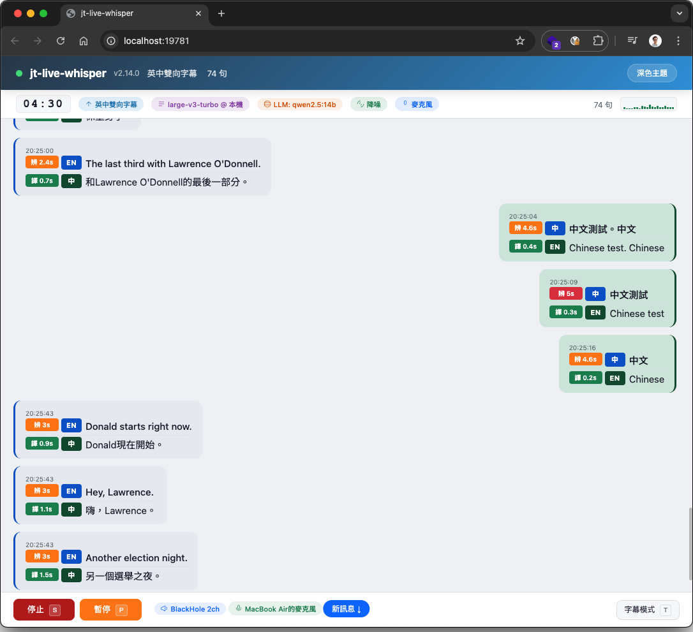
語音辨識、翻譯、講者辨識、摘要全部使用自有設備上的 AI 模型，不需要任何雲端 API Key，也不會把語音或會議內容上傳給第三方。適合企業內部會議、機密討論，以及任何在意隱私的場合。Speech recognition, translation, diarization and summarization all run on AI models on your own hardware — no cloud API keys, nothing uploaded to any third party. Built for internal meetings, confidential discussions and anyone who cares about privacy.
一套工具，從即時翻譯到會後摘要全包，全程不離開你的設備。One toolkit — from live translation to post-meeting summaries — all without leaving your device.
辨識、翻譯、講者辨識、摘要全部用自有設備上的 AI 模型，無需雲端 API Key、不上傳任何資料。Recognition, translation, diarization and summaries all use local AI models — no cloud API key, no uploads.
會議內容、語音資料全程留在自有設備，適合企業內部會議與機密討論。Meeting content and audio stay on your machine — ideal for internal and confidential discussions.
不需要付費雲端 API（ChatGPT、Claude、Gemini 等），所有採用的 AI 模型皆為自由開源。No paid cloud APIs (ChatGPT, Claude, Gemini…) — every model is free and open source.
採用系統音訊裝置層級擷取，理論上任何軟體的聲音輸出都能處理（Zoom、Teams、Meet、YouTube、Podcast 等）。Captures at the system-audio device level — virtually any app's output works (Zoom, Teams, Meet, YouTube, podcasts…).
從即時轉錄翻譯、離線音訊處理、講者辨識到 AI 摘要，一套搞定。From live transcription & translation to offline processing, diarization and AI summaries — all in one.
貼上三行指令，安裝腳本自動下載並編譯所有 AI 模型和相依套件，macOS 與 Windows 都支援。The installer downloads and builds every AI model and dependency for you — macOS and Windows.
緣起：某次參加原廠的線上技術課程，全程英文授課，聽得七零八落。為了補足英文聽力的不足，乾脆動手打造了這套工具來即時翻譯，結果功能越做越多，就變成現在這個樣子了 XD Origin: Struggling to follow an all-English vendor training session, the author built a tool to translate it live — then kept adding features until it became what you see today. 😄
即時、離線、講者、摘要——會議全流程都覆蓋。Live, offline, speakers and summaries — the whole meeting workflow.
擷取系統音訊，地端 AI 即時辨識並翻譯成繁體中文字幕顯示於終端機。開會、看影片、聽 Podcast 即時翻譯。Captures system audio and transcribes & translates it to subtitles in real time — meetings, videos, podcasts.
支援 mp3 / wav / m4a / flac，使用 faster-whisper 離線轉錄翻譯，適合會後補做逐字稿。mp3 / wav / m4a / flac via faster-whisper — perfect for post-meeting transcripts.
自動辨識音訊中的不同講者並以不同顏色標示，支援自動偵測或手動指定講者人數。Detects different speakers and color-codes them — auto-detect or set the speaker count manually.
透過地端 LLM 產出重點整理 + 校正逐字稿，搭配講者辨識，摘要中不同講者以不同顏色區分。A local LLM produces key-point summaries plus a corrected transcript, color-coded by speaker.
HTML 逐字稿內嵌音訊播放器與波形圖，點波形即跳到該時間點，播放時對應段落即時高亮。HTML transcript with an embedded player and waveform — click to seek; the current line highlights as it plays.
英中 / 日中雙向，同時擷取系統音訊與麥克風，對方外語翻中文、自己中文翻外語；共 10 種功能模式。EN↔ZH / JA↔ZH bidirectional from system audio + mic, plus 10 modes in total.
習慣終端機，或偏好瀏覽器圖形介面，兩種都行——同一套功能、同一份設定。Prefer the terminal or a browser GUI? Both drive the exact same features and config.
直接 ./start.sh 進入互動式選單，逐步引導完成所有設定；進階用戶可用命令列參數一行啟動。Run ./start.sh for a guided interactive menu, or launch directly with CLI flags for power users.
./start.sh --webui 在瀏覽器中完成所有設定與操作，不需記指令。即時 / 離線功能全包。./start.sh --webui does everything in the browser — no commands to remember. Covers live & offline.
一台電腦就能跑；要更快，再加一台 GPU 伺服器。兩種模式可隨時切換、自動降級。Run on one machine, or add a GPU server for speed. Switch anytime — it auto-falls back.
一台 Mac 或 Windows PC 即可完成所有處理，不需要額外硬體。One Mac or Windows PC handles everything — no extra hardware.
本機負責音訊擷取與介面，辨識與講者辨識交給區網內的 GPU 伺服器（系統音訊與麥克風兩路都可送遠端）。The client captures audio & UI; recognition and diarization run on a LAN GPU server (both system audio & mic).
點任一張圖可放大。Click any image to enlarge.
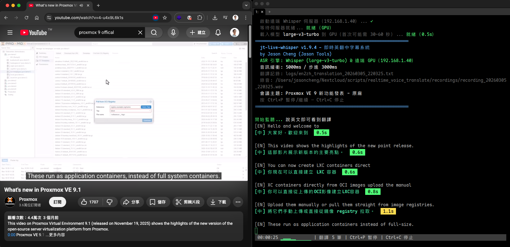
擷取系統音訊，地端 AI 一邊聽一邊辨識並翻成繁體中文，字幕即時顯示於終端機，並附上翻譯速度標籤與音訊波形。開會、看影片、聽 Podcast 都能即時跟上。Captures system audio and transcribes & translates it live, with speed badges and an audio waveform right in the terminal — keep up with meetings, videos and podcasts.
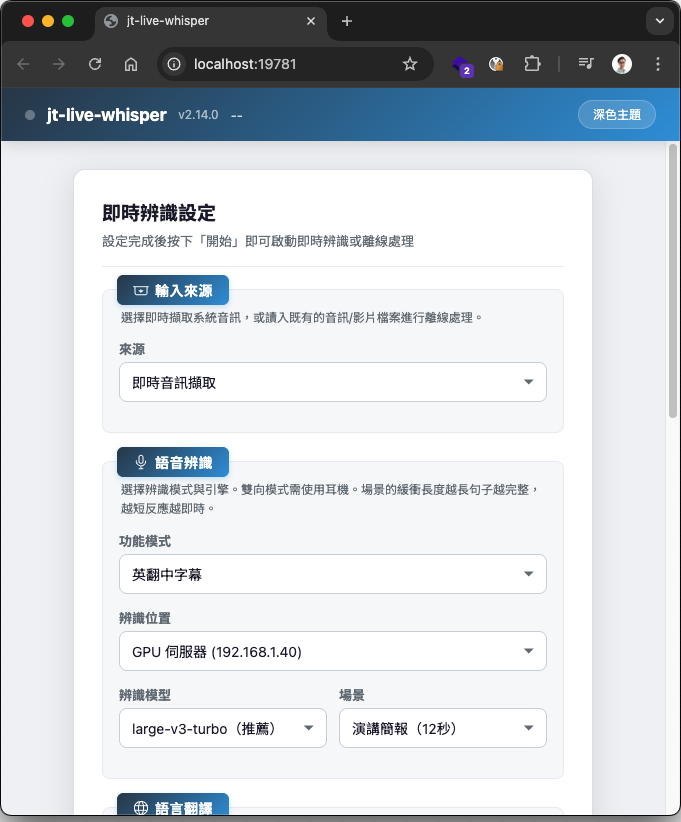
--webui 在瀏覽器中完成所有設定與操作：即時字幕、離線處理、講者辨識、摘要全包，辨識模型依裝置自動推薦，各階段即時進度顯示，手機 / 平板也能用。With --webui, do everything in the browser — live subtitles, offline processing, diarization and summaries — with device-aware model recommendations, live progress, and phone/tablet support.
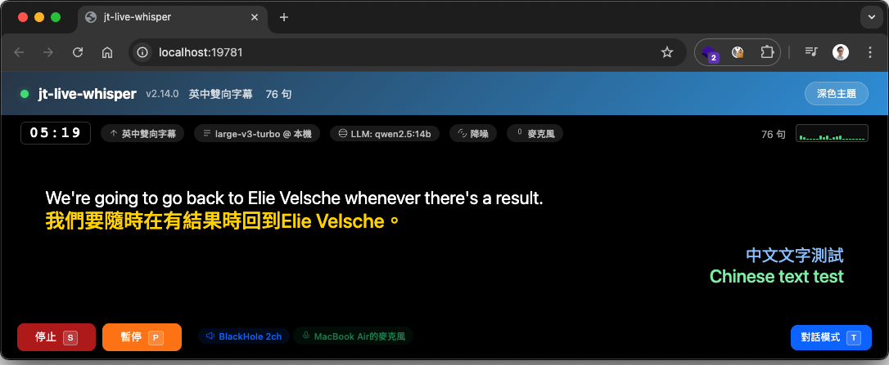
英中（en_zh）與日中（ja_zh）雙向：同時擷取系統音訊與麥克風，對方外語翻中文、自己中文翻外語，適用於雙語視訊會議。電影風格黑底大字，一眼看清。EN↔ZH and JA↔ZH: captures system audio and your mic at once — their language to Chinese, your Chinese to theirs. Big cinema-style captions for bilingual calls.
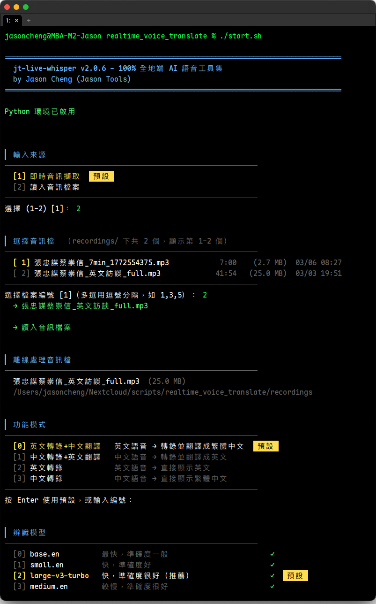
匯入錄音檔即可離線轉錄翻譯。互動式選單依序引導模式、辨識位置與模型、翻譯引擎、講者辨識與摘要設定，最後顯示等效 CLI 指令方便下次直接用。Import a recording for offline transcription. The interactive menu walks you through mode, engine, diarization and summary, then prints the equivalent CLI command for next time.
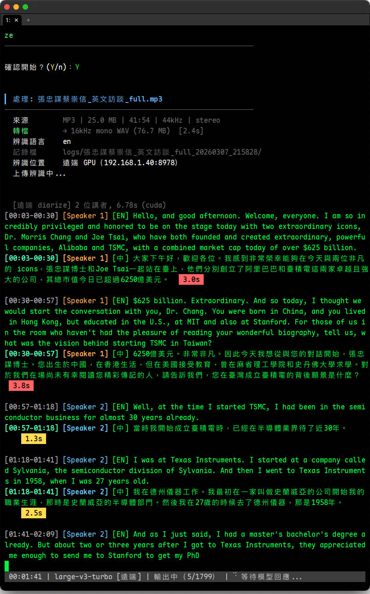
自動辨識音訊中的不同講者，以不同顏色清楚標示，支援自動偵測或手動指定 2–20 位講者。誰在什麼時候說了什麼，一目了然。Identifies different speakers and color-codes them — auto-detect or set 2–20 speakers manually. Who said what, when, at a glance.
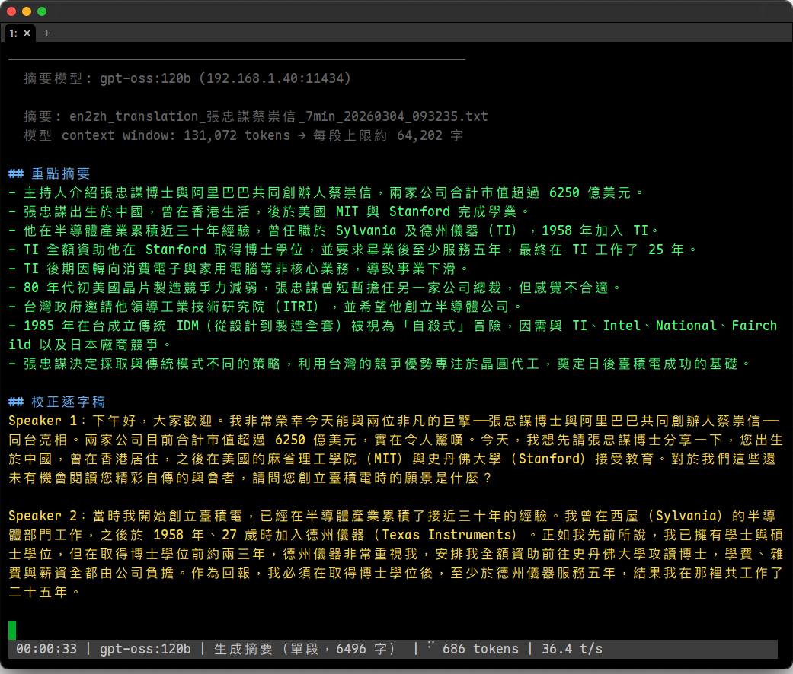
批次對記錄檔生成摘要，透過地端 LLM 產出重點整理與校正逐字稿。搭配講者辨識時，摘要中不同講者以不同顏色區分，會後重點立即成形。Generates summaries from logs via a local LLM — key points plus a corrected transcript, color-coded by speaker when diarization is on.
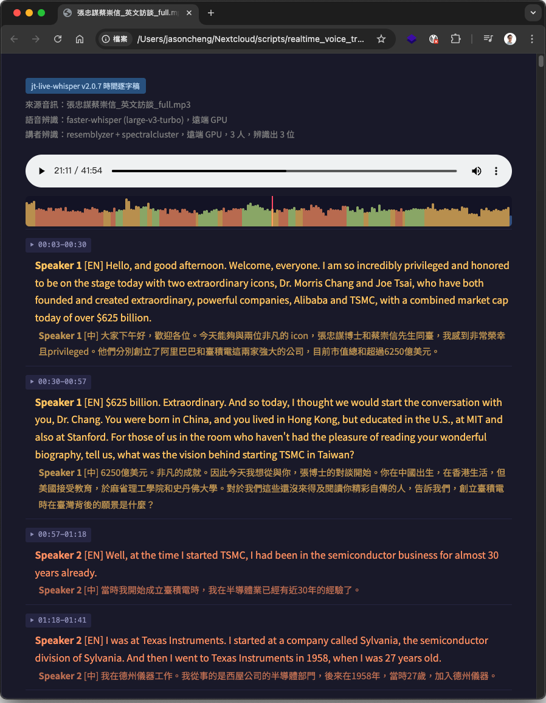
時間逐字稿 HTML 內嵌音訊播放器與波形圖，可直接點波形任意位置跳至該時間點；播放時對應段落即時高亮，對照聆聽超方便。另可輸出 SRT / WebVTT 字幕檔。The HTML transcript embeds a player and waveform — click anywhere to seek, and the matching line highlights as it plays. SRT / WebVTT export too.
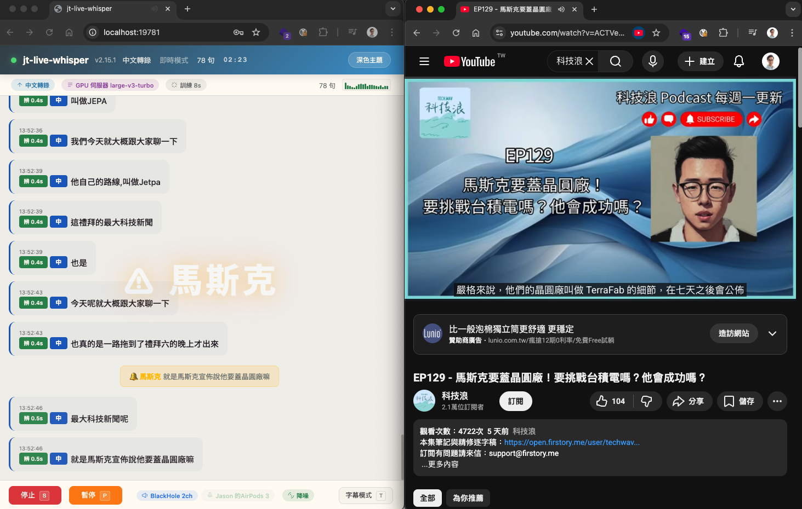
設定關鍵字，即時辨識出現時自動全螢幕警示 + 音效提醒。可追蹤會議重點，或線上課程在「請實作」「這個會考」時自動提醒，內建冷卻機制避免重複通知。Set keywords and get a full-screen alert plus sound the moment they're spoken — great for tracking key topics, with a cooldown to avoid repeats.
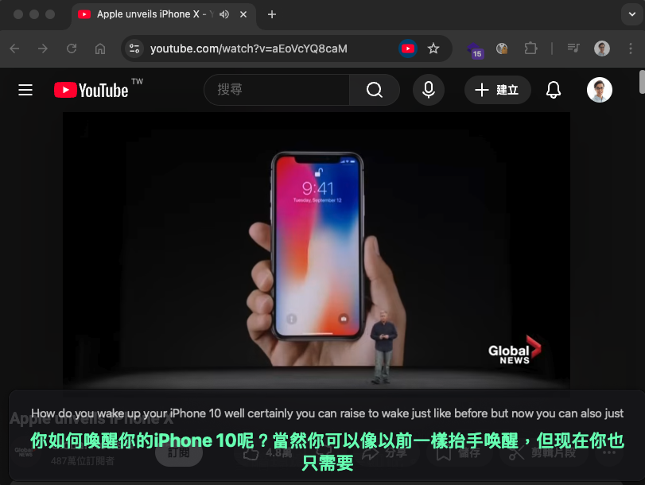
桌面半透明字幕覆蓋視窗（PyQt6），可疊加於任何應用程式上方。字體依視窗大小自動縮放、可拖曳移動與調整大小、支援滑鼠穿透與淡入淡出動畫，單語 / 雙語自動切換高度。A translucent desktop overlay (PyQt6) that floats over any app — auto-scaling text, drag & resize, click-through mode and fade animations.
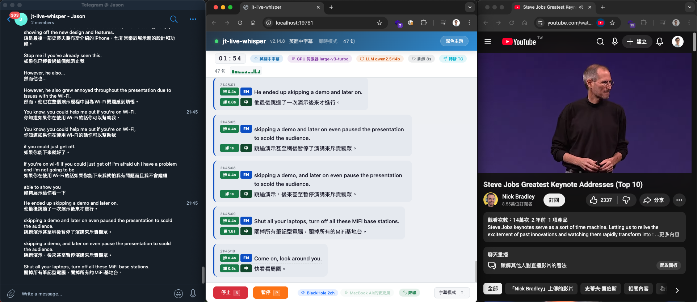
即時字幕自動轉發到通訊平台：Telegram / Slack / Discord / Teams / LINE / Nextcloud Talk / 通用 API。可同時啟用多平台、自訂發送間隔與內容（含時間 / 原文 / 譯文）。Forwards live subtitles to Telegram / Slack / Discord / Teams / LINE / Nextcloud Talk / a custom API — multiple at once, with custom intervals and content.
安裝腳本自動下載並設定所有地端 AI 模型和相依套件。首次約 10–20 分鐘。The installer downloads and configures every local AI model and dependency. First run takes ~10–20 min.
mkdir -p ~/Apps/jt-live-whisper && cd ~/Apps/jt-live-whisper
curl -fsSL https://raw.githubusercontent.com/sufrank/jt-live-whisper/main/install.sh -o install.sh
bash install.sh
mkdir C:\jt-live-whisper -Force | Out-Null; cd C:\jt-live-whisper
irm https://raw.githubusercontent.com/sufrank/jt-live-whisper/main/install.ps1 -OutFile install.ps1
powershell -ExecutionPolicy Bypass -File install.ps1
# macOS ./start.sh --webui # Windows .\start.ps1 --webui
不裝 LLM 也能翻譯：程式可切換為 NLLB（中日英互譯）或 Argos（僅英翻中）離線翻譯引擎，完全不需要額外伺服器。注意：摘要功能仍需 LLM 伺服器（推薦 Ollama）。 No LLM needed to translate: switch to the NLLB (ZH/JA/EN) or Argos (EN→ZH) offline engines — no server required. Summaries still need an LLM server (Ollama recommended).